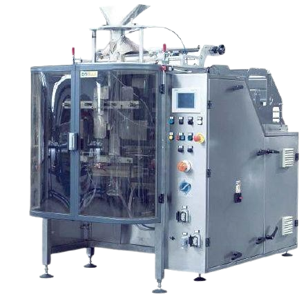

Flow-Pack pakkimisliin
Vertikaalne
SABALPACK JAGUAR
JAGUAR ECO PLUS pakkimissüsteem on loodud JAGUAR PLUS vertikaalse pakkimismasina ja ECO multipea dosaatori koostööl. Kogu liin on loodud võimalikult kompaktne, paindlik ja atraktiivse hinnaga turul. Jaguar Plus võimaldab erineva põhjaga flow-pakendit. Selle uus disain on loodud liitmiseks ECO multipea dosaatoriga, mis omab kaasaaegseimaid tehnilisi lahendusi. Suurt rõhku on pandud lihtsale hooldusele ja hügieenile. Pakendi mõõdu seadistus on enneolematult lihtne. Kõik katted on valmistatud AISI 304 roostevabast terasest.

Tehnilised andmed:
Mudel JAGUAR ECO PLUS
Kilerulli laius 500 mm
Keevituse pikkus 250 mm
Kiirus kuni 50 tsüklit minutis
Max pakendi suurus 235 x 350 mm
Konstruktsioon värvitud teras
PLC Siemens
Pneumaatika SMC
Juhtpaneel puutetundlik 7” ekraan
Kaalupesad 1,3 L (2,5 L lisa)
Pneumaatiline keevitussüsteem - servosüsteemiga pakendi edastus
Lisad:
Seisev põhi pakendile
Täisroostevaba versioon
Gaasiga pakkimise võimalus
Euro-riputusauk pakendile
Rohkem infot: SABALPACK JAGUAR